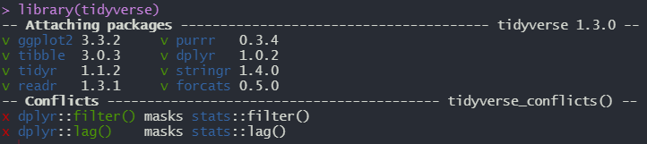
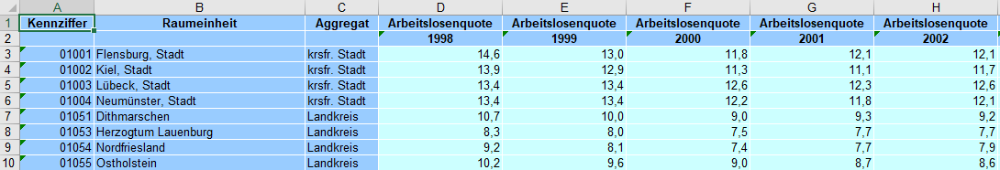
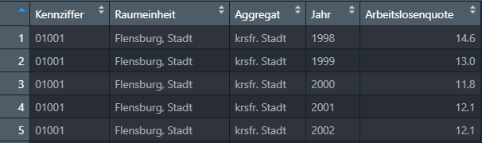
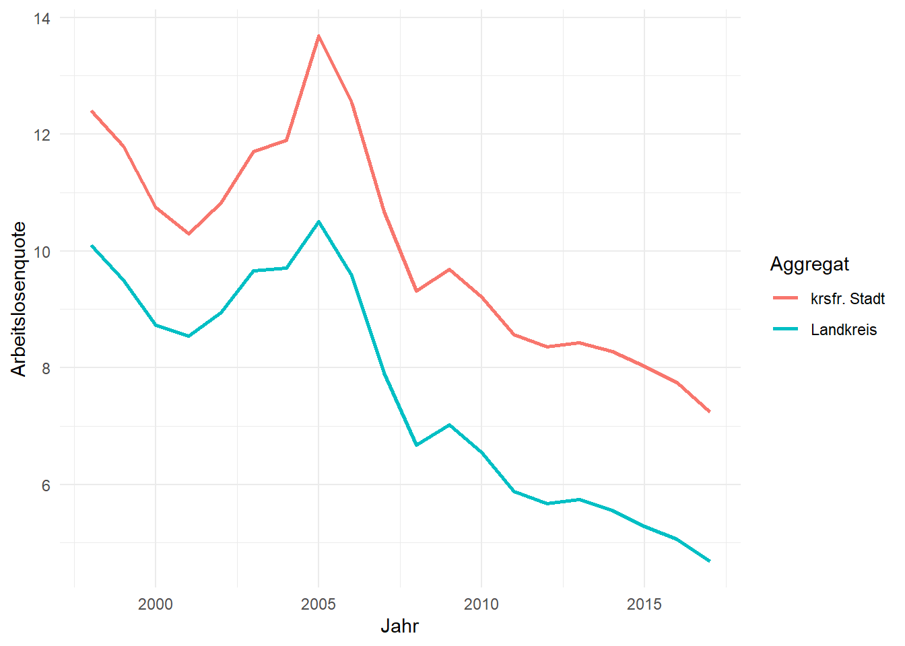

Das tidyverse in R ist eine Sammlung von Paketen, denen dieselbe Repräsentation von Daten (tidy data) zu Grunde liegen und die ein gemeinsames API Design nutzen. “Tidy data” umschreibt “aufgeräumte” bzw. “saubere” Daten und damit Daten, die so aufbereitet sind, dass jede Variable in einer Spalte und jede Beobachtung in einer Reihe repäsentiert wird. Die Pakete und Funktionen des tidyverse können die oft sperrigen und schwer verständlichen Base-R Funktionen fast vollständig ersetzen und bieten einen intuitiven Einstieg in die Analyse und Visualisierung von Daten.
Das tidyverse kann über den Befehl install.packages(“tidyverse”) installiert werden. Wird die Bibilothek in mit library(tidyverse) in die Umgebung geladen, sind die folgenden Pakete direkt nutzbar:
Neben den bisher genannten Paketen, die sofort genutzt werden können, wenn das tidyverse-Paket geladen wird, installiert der Befehl install.packages(“tidyverse”) weitere Pakete. Diese werden seltener gebraucht, sind aber doch so gebräuchlich, dass sie direkt mit installiert werden. Über den library(“Paketname”) Befehl müssen diese allerdings je nach Anwendungsbedarf zusätzlich in die Arbeitsumgebung geladen werden. Diese mit installierten Befehle umfassen:
Für die Arbeit mit Daten mit zeitlichem Bezug:
Für den Import weiterer Datenformate:
Modellierung
Lädt man das tidyverse in die Arbeitsumgebung, wird folgende Nachricht angezeigt:

Einerseits werden hier unter “Attaching packages” die geladenen Pakete samt der jeweiligen Version angezeigt. Unter “Conflicts” gibt es zudem zwei Warnhinweise. Diese weisen auf mögliche Probleme bei der Nutzung verschiedener R-Pakete hin. Hier werden durch das Laden des tidyverse zwei Befehle aus der “stats-Bibliothek” maskiert, also überschrieben. Konkret bedeutet das, dass nachdem das tidyverse geladen wurde, die Befehle filter() und lag() ihre Funktionalität aus dem “dplyr-Paket” und nicht mehr von “stats” beziehen. Möchte man jetzt die filter() Funktion aus der stats-Bibliothek nutzen, kann man diesen folgendermaßen aufrufen stats::filter().
# Lädt nur die filter() Funktion von dplyr
dplyr::filter()
# Lädt alle (!) Funktionen von dplyr und nutzt dann filter()
library(dplyr)
filter()Das tidyverse bietet ein kohärentes Framework, in welchem Daten intuitiv in ein gewünschtes Format übertragen werden können. Zunächst wird das Konzept von “Tidy Data” erklärt und anschließen ein Beispieldatensatz von Arbeitslosenzaheln in deutschen Landkreisen geladen.
“Tidy data” umschreibt “aufgeräumte” bzw. “saubere” Daten und damit Daten, die so aufbereitet sind, dass jede Variable in einer Spalte und jede Beobachtung in einer Reihe repäsentiert wird. Es ist wichtig, das Konuzept von tidy data zu verstehen, da alle Pakete im tidyverse darauf basieren. Im tidy data Format sollte ein Datensatz von den folgenden, zusammenhängenden Regeln beschrieben werden können:
Im folgenden Kapitel werden diese Regeln anhand eines Beispiels verdeutlicht.
In ihrer ursprünglichen Form sehen die Daten folgendermaßen aus:

Hier sieht man, dass sich die obene genannten Regeln für tidy data nicht anwenden lassen. Während die Variablen “Kennziffer”, “Raumeinheit” und “Aggregat” korrekt in einer Spalte gespeichert wurden, wurden die Variablen “Arbeitslosenquote” und “Jahr” auf mehrere Spalten (ins wide format) aufgeteilt. Dadurch hat jede Beobachtung (also die Arbeitslosenquote einer Raumeinheit pro Jahr) auch nicht eine eigene Zeile. Der folgende R-Code lädt die Daten und überführt sie in ein tidy data Format.
library(tidyverse)
# Laden der Daten
Arbeitslosenquote <-
readxl::read_xls('daten_beispiele/Arbeitslosenquote.xls',
skip = 1) %>%
rename('Kennziffer' = '...1',
'Raumeinheit' = '...2',
'Aggregat' = '...3') %>%
pivot_longer(!c(Kennziffer, Raumeinheit, Aggregat),
names_to = 'Jahr',
values_to = 'Arbeitslosenquote') %>%
mutate(Jahr = as.integer(Jahr)) Hier wird zunächst mit read_xls() die .xls-Datei geladen. Da das Paket readxl zwar im tidyverse mit heruntergeladen aber nicht automatisch in die Arbeitsumgebung geladen wird, wird das Paket hier mit readxl::read_xls() direkt angesprochen. Der Zusatz skip = 1 überspringt die erste Zeile der .xls-Datei, da die Variabelnnamen auf zwei Spalten verteilt sind.
Mit der Funktion rename() werden die fehlenden Variablennamen ergänzt.
Die letzte Funktion pivot_longer() überführt die restlichen Spalten vom wide ins long Format. Die Funktion wird im späteren Kursverlauf genauer erklärt.
Zuletzt wird die Variable “Jahr” in die integer Klasse überführt.
Der daraus resultierende Datensatz kann mit View(Arbeitslosenquote) im Viewer von R-Studio betrachtet werden.

Das tidyverse lädt automatisch die sogenannte “Pipe” aus dem magrittr-Paket. Die Pipe erlaubt es, Code zu schreiben der einfacher verstehen und zu lesen ist. Wollen wir etwa die fünf kreisfreien Städte mit der höchsten Arbeitslosenquote im aktuellsten Jahr gibt es mehrere Möglichkeiten, diese darzustellen. Eine Möglichkeit wäre, die notwendigen Operationen in neue Objekte zu speichern und diese dann weiterzu bearbeiten.
Arbeitslosenquote_1 <- filter(Arbeitslosenquote, Aggregat == "krsfr. Stadt")
Arbeitslosenquote_2 <- filter(Arbeitslosenquote_1, Jahr == max(Jahr))
Arbeitslosenquote_3 <- top_n(Arbeitslosenquote_2, 5)
Arbeitslosenquote_4 <- arrange(Arbeitslosenquote_3, desc(Arbeitslosenquote))
Arbeitslosenquote_4## # A tibble: 5 x 5
## Kennziffer Raumeinheit Aggregat Jahr Arbeitslosenquote
## <chr> <chr> <chr> <chr> <dbl>
## 1 05513 Gelsenkirchen, Stadt krsfr. Stadt 2017 14
## 2 04012 Bremerhaven, Stadt krsfr. Stadt 2017 13
## 3 05112 Duisburg, Stadt krsfr. Stadt 2017 12.5
## 4 07317 Pirmasens, Stadt krsfr. Stadt 2017 12.3
## 5 05916 Herne, Stadt krsfr. Stadt 2017 12.1Mit der Pipe lässt sich der obige Code wie folgt darstellen.
Arbeitslosenquote %>%
filter(Aggregat == "krsfr. Stadt",
Jahr == max(Jahr)) %>%
top_n(5) %>%
arrange(desc(Arbeitslosenquote))## # A tibble: 5 x 5
## Kennziffer Raumeinheit Aggregat Jahr Arbeitslosenquote
## <chr> <chr> <chr> <chr> <dbl>
## 1 05513 Gelsenkirchen, Stadt krsfr. Stadt 2017 14
## 2 04012 Bremerhaven, Stadt krsfr. Stadt 2017 13
## 3 05112 Duisburg, Stadt krsfr. Stadt 2017 12.5
## 4 07317 Pirmasens, Stadt krsfr. Stadt 2017 12.3
## 5 05916 Herne, Stadt krsfr. Stadt 2017 12.1Vor allem in punkto Lesbarkeit und Kompaktheit bietet die Pipe gegenüber ihren Alternativen große Vorteile. Auch wird hier kein zusätzlicher Arbeitsspeicher verwendent, um Objekte zu speichern, die eigentlich gar nicht benötigt werden. Illustriert am obigen Beispiel, kann man die Pipe folgendermaßen verstehen:
Das aktuelle Datenobjekt wird immer in den nächsten Schritt weitergegeben. Hier wird das Objekt “Arbeitslosenquote” also direkt im auf %>% folgenden Befehl als Datenobjekt verwendet. So entfällt der Schritt, in jeder Funktion vom Format filter(data, variable == “value”), das Datenobjekt (data) mit anzugeben.
Das bearbeitete Objekt wird immer in den nächsten Schritt weitergegeben, ohne dass es zwischengespeichert wird und werden muss.
Vereinfacht gesagt ist also
x %>% f äquivalent zu f(x)x %>% f(y) äquaivalent zu f(x , y) undx %>% f %>% g %>% h äquivalent zu h(g(f(x)))Vor allem in der explorativen Datenanalyse und beim Erstellen von Visualisierungen ist die Pipe sehr gut geeignet. Bei sehr komplizierten Datenstrukturen, oder sehr vielen Operationen sollte man allerdings auf andere Tools zurückgreifen.
Die filter() ermöglicht, wie der Name impliziert, das filtern von Datensätzen nach festgelegten Kriterien.
# Filtern nach Aggregat und Arbeitslosenquote
Arbeitslosenquote %>%
filter(Aggregat == "Landkreis",
Arbeitslosenquote > 10)## # A tibble: 1,148 x 5
## Kennziffer Raumeinheit Aggregat Jahr Arbeitslosenquote
## <chr> <chr> <chr> <chr> <dbl>
## 1 01051 Dithmarschen Landkreis 1998 10.7
## 2 01051 Dithmarschen Landkreis 2003 10.5
## 3 01051 Dithmarschen Landkreis 2004 11.1
## 4 01051 Dithmarschen Landkreis 2005 13.7
## 5 01051 Dithmarschen Landkreis 2006 11.8
## 6 01054 Nordfriesland Landkreis 2005 10.1
## 7 01055 Ostholstein Landkreis 1998 10.2
## 8 01055 Ostholstein Landkreis 2005 11.3
## 9 01056 Pinneberg Landkreis 2005 10.1
## 10 01059 Schleswig-Flensburg Landkreis 2005 10.2
## # ... with 1,138 more rowsMit der Funktion select() wählt man alle relevanten Spalten bzw. Variablen aus einem Datensatz aus.
Arbeitslosenquote %>%
select(Raumeinheit, Jahr, Arbeitslosenquote)## # A tibble: 8,020 x 3
## Raumeinheit Jahr Arbeitslosenquote
## <chr> <chr> <dbl>
## 1 Flensburg, Stadt 1998 14.6
## 2 Flensburg, Stadt 1999 13
## 3 Flensburg, Stadt 2000 11.8
## 4 Flensburg, Stadt 2001 12.1
## 5 Flensburg, Stadt 2002 12.1
## 6 Flensburg, Stadt 2003 13.7
## 7 Flensburg, Stadt 2004 14
## 8 Flensburg, Stadt 2005 18.3
## 9 Flensburg, Stadt 2006 15.4
## 10 Flensburg, Stadt 2007 12.5
## # ... with 8,010 more rowsDie Funktion mutate() erlaubt es, Spalten bzw. Variablen in einem Datensatz zu verändern oder neue Spalten zu erzeugen.
Arbeitslosenquote %>%
select(Raumeinheit, Jahr, Arbeitslosenquote) %>%
filter(Jahr == "2007") %>%
mutate(Abweichung = Arbeitslosenquote - mean(Arbeitslosenquote))## # A tibble: 401 x 4
## Raumeinheit Jahr Arbeitslosenquote Abweichung
## <chr> <chr> <dbl> <dbl>
## 1 Flensburg, Stadt 2007 12.5 3.86
## 2 Kiel, Stadt 2007 12.6 3.96
## 3 Lübeck, Stadt 2007 13.1 4.46
## 4 Neumünster, Stadt 2007 11.6 2.96
## 5 Dithmarschen 2007 10 1.36
## 6 Herzogtum Lauenburg 2007 7.2 -1.44
## 7 Nordfriesland 2007 8.5 -0.141
## 8 Ostholstein 2007 8.8 0.159
## 9 Pinneberg 2007 6.8 -1.84
## 10 Plön 2007 7.6 -1.04
## # ... with 391 more rowsgroup_by() gruppiert bestimmte Variablen in gewünschte Gruppen für nachfolgende Operationen. Viele Funktionen bauen auf group_by auf.
Arbeitslosenquote %>%
select(-Kennziffer) %>%
filter(Jahr == "1998") %>%
group_by(Aggregat) %>%
mutate(Quote_Aggr = mean(Arbeitslosenquote))## # A tibble: 401 x 5
## # Groups: Aggregat [2]
## Raumeinheit Aggregat Jahr Arbeitslosenquote Quote_Aggr
## <chr> <chr> <chr> <dbl> <dbl>
## 1 Flensburg, Stadt krsfr. Stadt 1998 14.6 12.4
## 2 Kiel, Stadt krsfr. Stadt 1998 13.9 12.4
## 3 Lübeck, Stadt krsfr. Stadt 1998 13.4 12.4
## 4 Neumünster, Stadt krsfr. Stadt 1998 13.4 12.4
## 5 Dithmarschen Landkreis 1998 10.7 10.1
## 6 Herzogtum Lauenburg Landkreis 1998 8.3 10.1
## 7 Nordfriesland Landkreis 1998 9.2 10.1
## 8 Ostholstein Landkreis 1998 10.2 10.1
## 9 Pinneberg Landkreis 1998 8.4 10.1
## 10 Plön Landkreis 1998 8.9 10.1
## # ... with 391 more rowssummarise() oder summarize() fasst alle Reihen zusammen und gibt eine Zusammenfassung dieser Reihen aus.
Arbeitslosenquote %>%
select(-Kennziffer) %>%
filter(Jahr == "1998") %>%
group_by(Aggregat) %>%
summarise(Quote_Aggr = mean(Arbeitslosenquote))## # A tibble: 2 x 2
## Aggregat Quote_Aggr
## <chr> <dbl>
## 1 krsfr. Stadt 12.4
## 2 Landkreis 10.1Die Funktion arrange() sortiert die Daten in einer gewünschten Reihenfolge.
Arbeitslosenquote %>%
select(-Kennziffer) %>%
filter(Jahr == max(Jahr)) %>%
arrange(Arbeitslosenquote)## # A tibble: 401 x 4
## Raumeinheit Aggregat Jahr Arbeitslosenquote
## <chr> <chr> <chr> <dbl>
## 1 Eichstätt Landkreis 2017 1.5
## 2 Erding Landkreis 2017 1.8
## 3 Pfaffenhofen a.d.Ilm Landkreis 2017 1.8
## 4 Neumarkt i.d.OPf. Landkreis 2017 1.9
## 5 Regensburg Landkreis 2017 1.9
## 6 Unterallgäu Landkreis 2017 1.9
## 7 Donau-Ries Landkreis 2017 1.9
## 8 Ebersberg Landkreis 2017 2
## 9 Erlangen-Höchstadt Landkreis 2017 2
## 10 Main-Spessart Landkreis 2017 2
## # ... with 391 more rowsFür das Erstellen von Grafiken mit ggplot2 müssen die Daten im oben beschriebenen tidy data Format sein. Ein guter Workflow beinhaltet deshalb, die Daten mit den oben besprochenen Funktionen in das gewünschte Format zu bringen und dann direkt mit der Pipe nach ggplot zu übergeben.
Eine beispielhafte erste Grafik, die die Arbeitslosenquote pro Jahr und Aggregat zeigt, könnte folgendermaßen aussehen:
Arbeitslosenquote %>%
group_by(Aggregat, Jahr) %>%
summarise(Arbeitslosenquote = mean(Arbeitslosenquote)) %>%
ggplot(aes(x = Jahr,
y = Arbeitslosenquote,
group = Aggregat,
col = Aggregat)) +
geom_line(size = 1.0) +
theme_minimal()
Ausführliche Informationen zu Datenvisualisierung in R mit ggplot2 gibt es im anschließenden Kapitel unter “Visualisierung”.
Hier werden eine Reihe von Links mit weiterführenden Informationen zum Datenmanagement mit dem Tidyverse angeführt. Auch wenn dieser Kurs hauptsächlich Datenvisualisierung diskutiert, ist das Datenmanagement und die Transformation von Daten ein zentraler Teil von Datenvisualisierung. Deshalb ist es unerlässlich, sich vertieft mit den wichtigsten dplyr-Funktionen vertraut zu machen und diese regelmäßig zu benutzen. Gute weiterführende Informationsquellen über das Datenmanagement im Tidyverse sind deshalb hier aufgeführt.